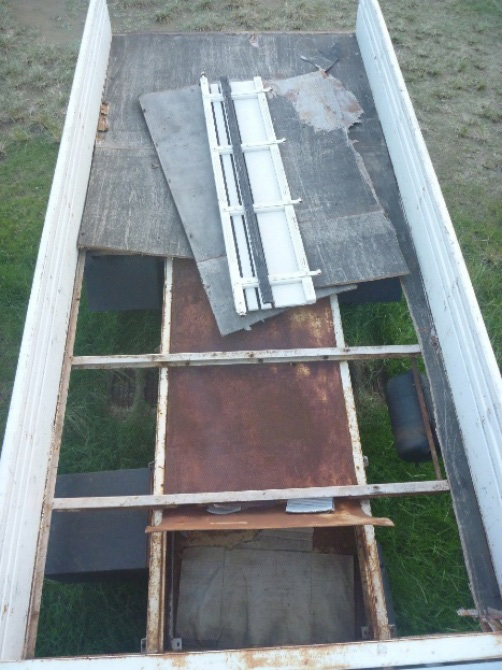
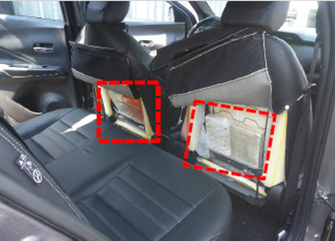

Comumente encontram-se nos veículos periciados alterações estruturais e funcionais que se afastam das características originais de projeto e passam a atender finalidades ilícitas específicas. (p. 67)
Conceito-chave: Essas modificações assumem diferentes formas e graus de complexidade, exigindo análise técnica cuidadosa para distinção entre alterações deliberadas e elementos construtivos naturais. (p. 67)
2. Finalidades das intervenções
As alterações se relacionam, sobretudo, a quatro finalidades ilícitas específicas: (p. 67)
Quatro finalidades ilícitas:
Ocultação de ilícitos;
Facilitação de fuga;
Comunicação clandestina;
Dissimulação de atividades criminosas.
Mnemônico — Finalidades: O-F-C-D
Ocultação de ilícitos
Fuga (facilitação)
Comunicação clandestina
Dissimulação de atividades criminosas
3. Compartimentos adrede preparados

Figura 76 — Compartimento adrede preparado: fundo falso construído sob o assoalho da caçamba. (p. 68)
Definição: Os compartimentos adrede preparados constituem intervenções realizadas intencionalmente na estrutura do veículo com o objetivo de criar espaços ocultos destinados ao transporte ou armazenamento de substâncias, mercadorias ou objetos. (p. 67)
Exemplos ilustrados no PDF (Figuras 74 a 77): (p. 67-68)
Local adrede visível com a remoção do para-choque (Figura 74);
Local adrede sob o assoalho do porta-malas (Figura 75);
Fundo falso abaixo da carroceria (Figura 76);
Fundo falso na porção anterior do compartimento de carga de um caminhão baú (Figura 77).
4. Compartimento adrede x cavidade natural

Figura 78 — Uso de cavidade natural do veículo: entorpecente oculto no espaço atrás do encosto dos bancos traseiros. (p. 68)
É essencial distinguir os compartimentos adrede preparados das cavidades naturais, que correspondem a espaços construtivos pré-existentes do veículo eventualmente usados para ocultação, mas sem adaptação estrutural. (p. 67-68)
Aspecto
Compartimento adrede preparado
Cavidade natural
Origem
Intervenção intencional na estrutura
Espaço construtivo pré-existente do veículo
Sinais característicos
Cortes, soldas, chapas adicionadas, mecanismos de abertura dissimulados, incongruências estruturais
Não apresenta adaptações estruturais
Exemplos do PDF
Fundo falso no porta-malas; sob o para-choque; sob a carroceria; em caminhão baú
Cocaína oculta na forração dos bancos (Fig. 78); cocaína atrás do painel corta-fogo (Fig. 79)
Sinais de adaptação (compartimento adrede):
Cortes;
Soldas;
Chapas adicionadas;
Mecanismos de abertura dissimulados;
Incongruências estruturais.
(p. 67)
5. Reforços de suspensão
Definição: Os reforços de suspensão são modificações estruturais deliberadas destinadas, sobretudo, a dissimular a presença de sobrecarga decorrente do transporte de ilícitos, de modo que, em uma fiscalização inicial, o veículo não apresente sinais evidentes de excesso de peso. (p. 69)
Ao elevar artificialmente a capacidade de sustentação ou rigidez da suspensão, busca-se manter a altura próxima aos parâmetros esperados para um veículo descarregado, dificultando a percepção imediata da carga adicional e retardando a identificação da irregularidade pelos órgãos de controle. (p. 69)
Exemplos do PDF (Figuras 80 a 82):
Reforço de suspensão com molas duplas (Figura 80);
Reforço de suspensão com calço (Figura 81);
Reforço de suspensão com calço (Figura 82).
6. Geradores de fumaça
Definição: Em contexto correlato, os dispositivos conhecidos como geradores de fumaça representam adaptações instaladas para dificultar perseguições policiais, liberando material particulado ou fumaça intensa para reduzir a visibilidade do entorno. (p. 69)
Sinais reveladores: Essas instalações, alheias à função normal do veículo, costumam ser associadas a sistemas elétricos ou mecânicos independentes e revelam planejamento direcionado à evasão em situações de abordagem. (p. 69)
Exemplos ilustrados no PDF: (p. 70)
Gerador de fumaça (Figura 83);
Bombeamento de fluido para bujão do catalizador (Figura 84).
7. Rádio oculto (transceptor clandestino)
Definição: Sob perspectiva semelhante, situações envolvendo rádio oculto abrangem a instalação de equipamentos de comunicação clandestinos, frequentemente dissimulados no painel, console, forrações ou compartimentos ocultos do habitáculo. (p. 70)
Esses dispositivos permitem comunicação à distância, com integração não original aos sistemas do veículo, caracterizando tentativa de ocultação deliberada de meios de comunicação. (p. 70)
Exemplos do PDF:
Rádio transceptor oculto (Figura 85);
Rádio transceptor oculto (Figura 86).
Locais comuns de dissimulação do rádio:
Painel;
Console;
Forrações;
Compartimentos ocultos do habitáculo.
8. Síntese: importância pericial das intervenções
Citação literal do PDF: "Em seu conjunto, as alterações descritas evidenciam práticas reiteradas de adaptação intencional do veículo para fins ilícitos, extrapolando o uso regular e legítimo do bem. A correta identificação e descrição técnica dessas intervenções são fundamentais para a caracterização do contexto criminoso, para a fundamentação do laudo pericial e para a adequada valoração probatória no âmbito da investigação." (p. 71)
Mnemônico — Tipos de intervenções ilícitas (PDF): CARG-FUGA-COM